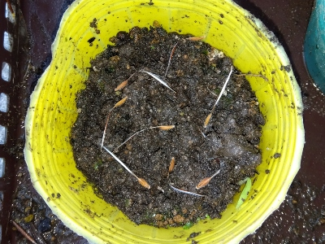
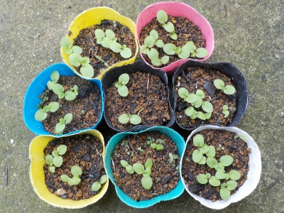

ゼラニウムのタネがいっぱい出来ていたので、収穫してすぐに蒔きました。
更新日 : 2026/06/20

タネが出来ているかはよく分かりませんが、これだけ蒔けは何個か芽が出るでしょう。
更新日 : 2026/06/20

タネが出来ているかはよく分かりませんが、これだけ蒔けは何個か芽が出るでしょう。
更新日 : 2026/07/05

タネがしっかり実ってたみたいで発芽が多かったです。
ポットに植え替えや雨に打たれて枯れるものもあるだろうから、多いくらいが丁度いいです。
何鉢増やそうかな。